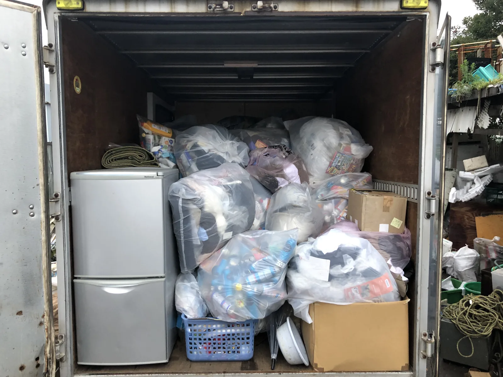
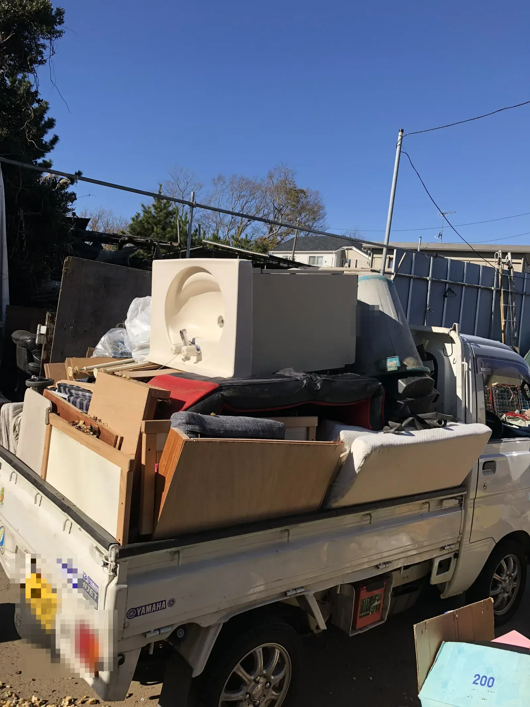
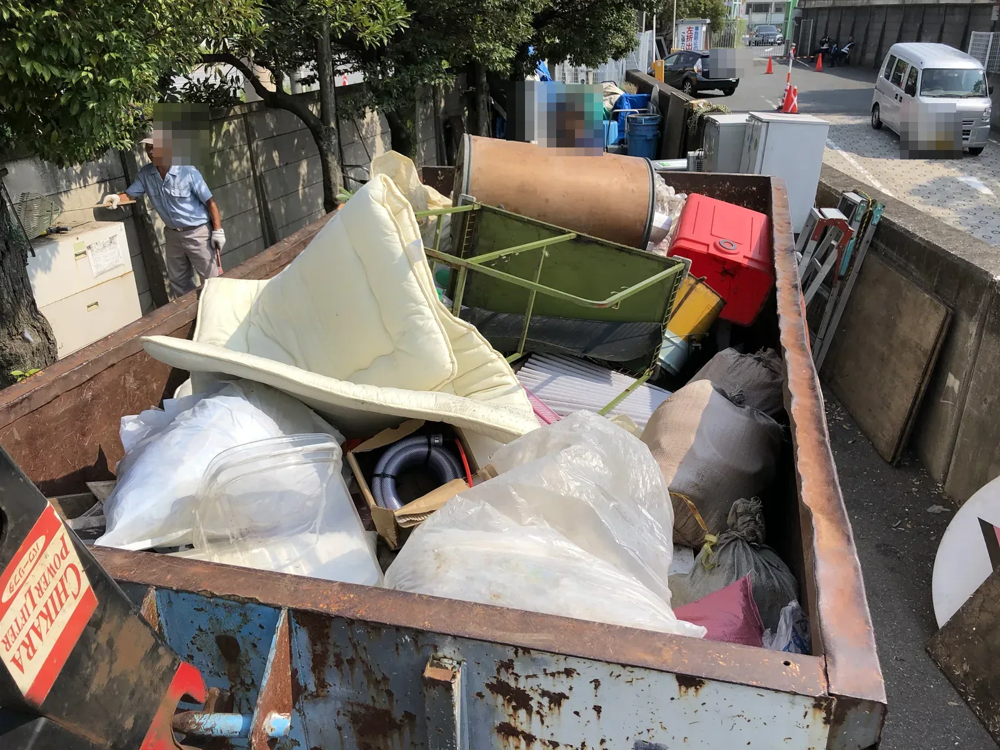
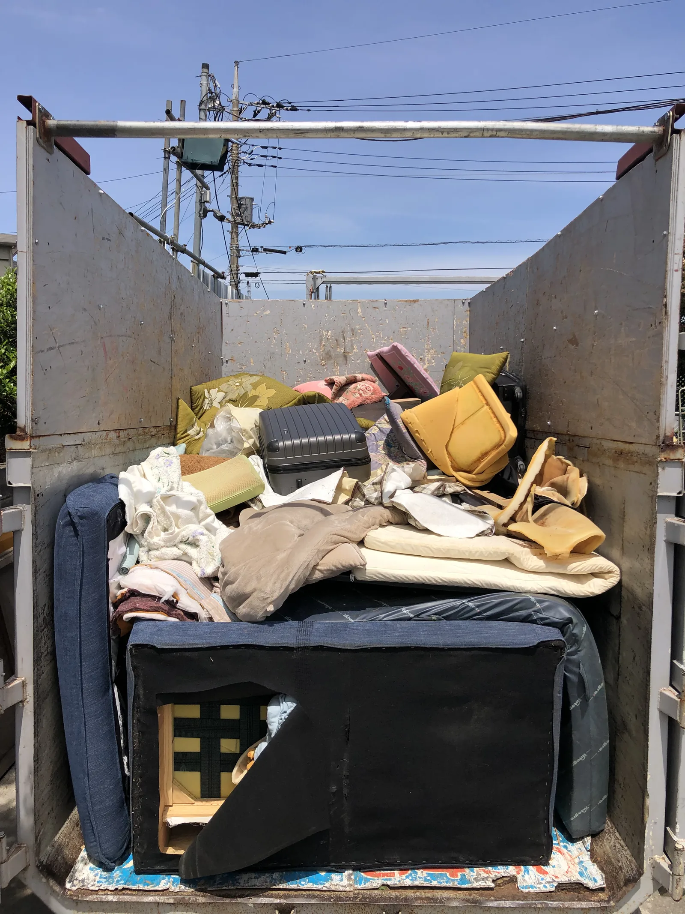

BUSINESS DROP-OFF遺品整理業者・片付け業者様向け
遺品整理業者様へ
現場後の不用品を
まとめて持ち込み相談
現場後、車に積んだまま持ち込み先を探している業者様へ。
写真で内容を確認し、受け入れ可否と対応方法を事前にご案内します。
- 業者様向け窓口
- 仕分け前でも相談可
- 写真で事前確認
- 18時まで受付
- 横浜市都筑区の受け入れ拠点
受付 9:00〜18:00・日曜定休｜045-507-7151｜担当者直通 080-3213-3680

FOR PROFESSIONALS
こんな業者様に
現場後、車に積んだまま持ち込み先を探している業者様にご相談いただけます。
- 現場後の荷下ろし先を探している
- 車に積んだまま次の現場や倉庫へ戻りたくない
- 仕分け前の不用品をまとめて相談したい
- 処分費を少しでも抑えたい
- まだ使える物を活かしたい
- 資源物・再利用品の受け入れ先を探している
- 都内・横浜・川崎周辺で持ち込み先を探している
- 複数の荷下ろし先を回る移動時間を減らしたい
- 燃料代や荷下ろし先探しの手間を抑えたい
- 現場後、18時まで持ち込み相談できる先を探している

横浜クリーンサービスは、横浜市都筑区の拠点で不用品の持ち込みをお受けする業者様向けの受け入れ窓口です。仕分け前の混在した状態から、弊社でまとめて完結相談いただけます。受け入れ可否を確認するため、持ち込み前にまずは写真で内容をお送りください。
ITEMS
持ち込み相談できる品目
現場後に出た不用品を、品目に応じてご相談いただけます。
- 家具
- 家電
- 雑貨
- 金属類
- 古紙・段ボール
- 衣類・生活用品
- 再利用可能品
- その他、現場後に出た不用品
上記はご相談いただける品目の一例です。すべての品物を必ず受け入れられるわけではなく、内容確認のうえでのご案内となります。法令・自治体ルール・品目や状態により、受け入れ不可または条件が必要な場合があります。
PRICE
料金目安
現場後の不用品
1立米あたり
税込10,000円
家具・家電・雑貨・資源物など、内容確認のうえご案内します
少量の持ち込み
物量に応じて算出
少量でもご相談いただけます。品目と状態を確認してご案内します。
条件確認が必要なもの
個別にご案内
家電リサイクル対象品、状態が悪いもの、法令確認が必要な品目は個別確認となります。
正式な料金は、品目・状態・物量を確認したうえでご案内します。
- 持ち込みの場合は1立米あたり税込10,000円が目安です
- 受け入れ不可または条件が必要な品目があります
- 写真を送っていただくと概算確認がスムーズです
- 回収・搬出が必要な場合は別途ご相談ください
FLOW
持ち込みの流れ
LINEまたは電話で相談
まずは現場後の状況をお知らせください。
写真を送る
品目や量が分かる範囲の写真をお送りください。
受け入れ可否・料金目安を確認
写真をもとに、受け入れ可否と1立米あたり税込10,000円を目安にした概算をご案内します。
日時を調整
持ち込み日時をご相談のうえ決定します。
横浜市都筑区の拠点へ持ち込み
ご相談いただいた日時にお越しください。
荷下ろし・内容確認
現地で内容を確認しながら荷下ろしします。

LINE CHECK
LINEで送ってほしい写真
現場後の移動前に、分かる範囲でお送りください。受け入れ可否と料金目安の確認が早くなります。
全体の量
車内・荷台・室内など、全体の物量が分かる写真
品目の内訳
家具・家電・雑貨・金属・古紙など、品目が分かる写真
状態の確認
破損・汚れ・液体・危険物の有無が分かる写真
希望日時
持ち込み希望日、到着予定時間、おおよその立米数
写真だけで判断が難しい場合は、追加確認をお願いすることがあります。受け入れ不可または条件付きとなる品目もあります。
REASONS
遺品整理業者様に選ばれる理由
写真で事前確認できる
現地に来る前に、写真で受け入れ可否と条件の目安を確認できます。
弊社でまとめて完結相談
家具・家電・雑貨・金属類・古紙・資源物など、複数の品目が混在した状態でも、まずは弊社でまとめてご相談いただけます。
業者様からの相談に対応
遺品整理・不用品回収・片付け業者様からの持ち込み相談にも対応します。
都内・横浜・川崎から持ち込みやすい
横浜市都筑区の拠点で、横浜市内はもちろん、川崎方面や都内方面からの持ち込み相談にも対応します。
移動時間と燃料代の負担を減らしやすい
品目ごとに複数社へ荷下ろしに回る手間を減らし、現場後の移動時間や燃料代の負担を抑えやすくなります。
18時まで受付
夕方に現場が終わった後でも相談しやすいよう、月曜日から土曜日の18時まで受け付けています。
再利用品・資源物を活かす相談ができる
まだ使える物や資源物についても、活かし方をあわせてご相談いただけます。
NOTICE
ご利用にあたっての注意事項
当店は廃棄物の処分場ではありません。内容を確認したうえで、受け入れ可否と対応方法をご案内します。
- 法令・自治体ルール・品目・状態により、受け入れ不可または条件が必要な場合があります
- 一般廃棄物・産業廃棄物・家電リサイクル対象品などは、適切な方法をご案内します
- 当日のご相談も可能ですが、受け入れ可否を確認するため、持ち込み前にLINE写真または電話でご相談ください
- 受け入れ可否・条件は、写真確認または現地確認後に正式にご案内します
FAQ
よくある質問
仕分け前でも相談できますか？
はい。仕分け前の混在した状態のままご相談いただけます。まずは写真で内容が分かる範囲をお送りください。
不用品をまとめて持ち込めますか？
はい。現場後に出た家具・家電・雑貨など、複数の品目をまとめてご相談いただけます。内容を確認のうえ、受け入れ方法をご案内します。
料金目安はありますか？
持ち込みの場合は1立米あたり税込10,000円が目安です。品目・状態・物量により変わる場合があるため、写真確認または現地確認後に正式にご案内します。
写真だけで受け入れ可否は分かりますか？
写真から概ねの受け入れ可否と条件をご案内できます。品目や状態によっては、追加の確認をお願いする場合があります。
当日持ち込みはできますか？
当日のご相談も可能です。ただし受け入れ可否や条件確認が必要なため、持ち込み前にLINE写真または電話でご相談ください。
家電も相談できますか？
はい、ご相談いただけます。ただし家電リサイクル対象品など、品目によって適切な取り扱い方法をご案内する場合があります。
受け入れできない物はありますか？
はい。法令や自治体のルール、品目・状態により、受け入れ不可または条件が必要な場合があります。まずはご相談ください。
業者以外でも利用できますか？
本ページは遺品整理業者・不用品回収業者・片付け業者様向けの受け入れ窓口としてご案内しています。個人のお客様は、他の窓口にご相談ください。
COMPANY
会社情報
| 会社名 | 横浜クリーンサービス |
|---|---|
| 所在地 | 〒224-0053 神奈川県横浜市都筑区池辺町1185 |
| 電話番号 | 045-507-7151 |
| 担当者直通 | 080-3213-3680 |
| 受付時間 | 9:00〜18:00・日曜定休 |
| 許認可 | 産業廃棄物収集運搬業許可番号 171334号 |
CONTACT
現場後の不用品、
まずは写真でご相談ください。
品目、おおよその量、持ち込み希望日が分かる範囲で構いません。内容を確認のうえ、受け入れ可否と対応方法をご案内します。
受付 9:00〜18:00・日曜定休｜045-507-7151｜担当者直通 080-3213-3680
